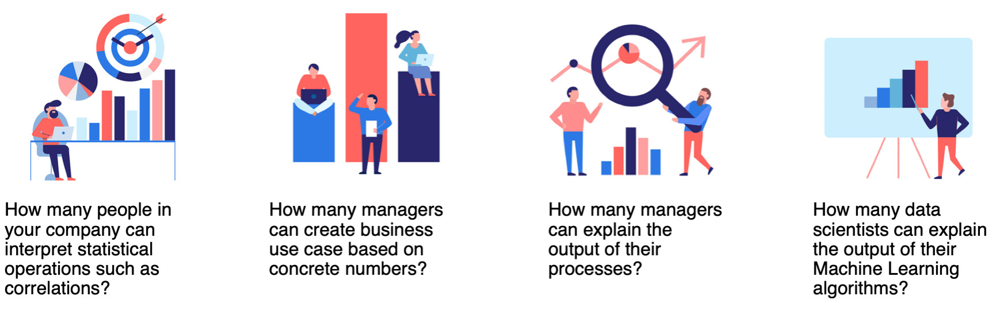
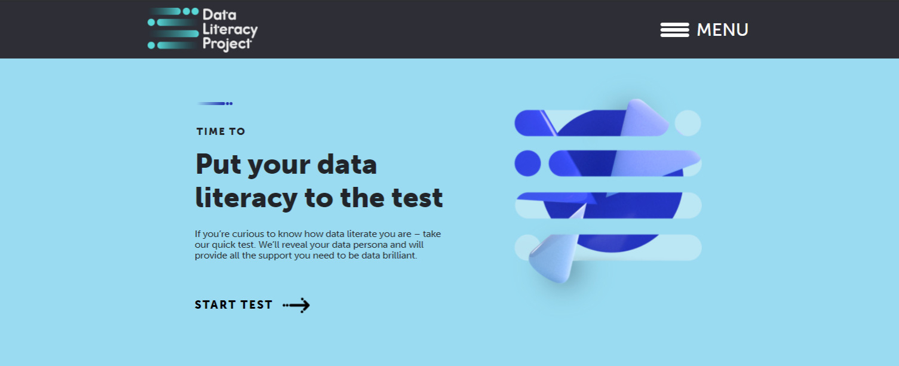

Lesson 2 - Data Literacy
At the end of this lesson, you will be able to:
- Explain what is Data Literacy.
- Define Structured and Unstructured Data.
- Identify different methods of Data mining and Data Storage.
Data
Gartner defines data literacy as the ability to read, write, and communicate data in context. What does this mean? You must know where the data is coming from (the Source), how is the data being structured and analyzed, what is the purpose of analyzing data - in other words, what are you trying to solve, what do the results mean to the stakeholders.
The disadvantages of not being data literate:
- Cannot fully utilize the potential of all the data that is lying around.
- Losing out in competition, where everyone else is leveraging data for decision making
- Making wrong assumptions, leading to wrong decisions.
- Garbage-in, garbage-out (GIGO).
The obstacles to Data Literacy include:
- Company culture: leaders must show the importance of using data in making decisions (data-first approach).
- Insufficient relevant training: employee not trained in using data analytics tools.
- Empowerment: employees are not empowered to use data to improve on work processes.
- Data: the data itself is incorrect, insufficient, irrelevant, making it unusable for data analytics.
Assessing Data Literacy At Workplace

Discussion prompt

 Complete on your own!
Complete on your own!
Open up Unit 8 Lesson 2 - Test Your Data Literacy discussion.
Directions:
- For this discussion we would like to know how data literate you are – take this quick test. It will reveal your data persona and will provide all the support you need to be data brilliant. There are many data literacy assessments out there.
- For today, let’s try The Data Literacy Project
- How did you fare?
Answer the questions above in your response. You will not be able to see other posts until you have posted. Once you have posted, look at the other posts and respond.
Types of Data
There are two main types of data – structured data and unstructured data.
Structured Data
Structured data has a predefined format of how the data is written or saved. It is usually presented in a table format with precisely defined fields.
Examples include:
- credit card numbers and addresses of customers in the bank.
- Records of purchases at the supermarket.
- Traffic flow at the website.
Unstructured Data
Unstructured data is data that is stored in its native format and not processed until it is used. There are usually no fixed fields to describe the data, and the data isn’t easily displayed in a table for a meaningful comparison.
Examples include:
- Photos of employees in the company.
- Email messages sent between the vendor and the customer.
- Songs recorded in mp3.
Data Mining
- Data mining is a process of extracting valuable information from raw data. This information consists of patterns that we can use as insights that are useful for our business needs.
- This is an important component for creating AI models. It is also critical for business intelligence and data science.
Data Storage
- Storing of digital files and documents for future use.
- The storage systems may rely on electromagnetic, optical, or other media methods.
- Data can be stored locally or on the cloud.
How Much Data Do We Consume?
- We need to keep all the data in a central place for analysis.
- The data keeps on increasing.
- Check out Data Never Sleeps 12.0 to see up to date stats of how the quantity and kind of data has been changing over the years